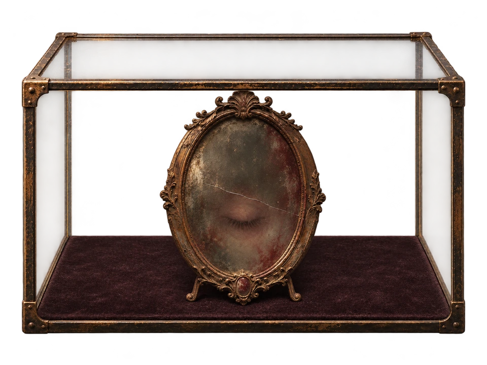
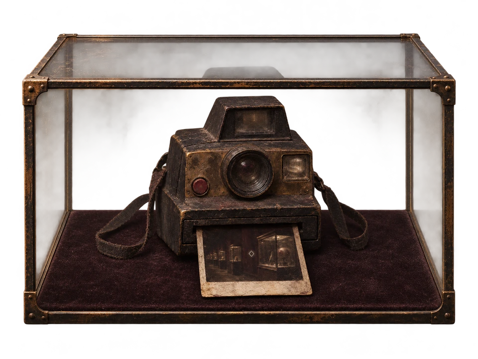
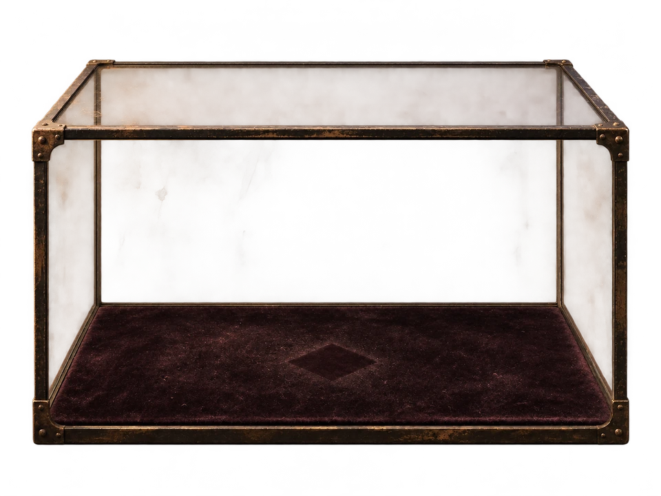

vitrine 01
le miroir brisé
mis ici après qu’un visiteur a vu son reflet fermer les yeux avant lui.
le musée est fermé, mais les vitrines sont encore éclairées.

vitrine 01
mis ici après qu’un visiteur a vu son reflet fermer les yeux avant lui.

vitrine 02
la dernière photo vous montre devant cette vitrine, et elle a été prise hier.

vitrine 03
la prochaine pièce, c’est toi.
continuer vers la salle blanche →